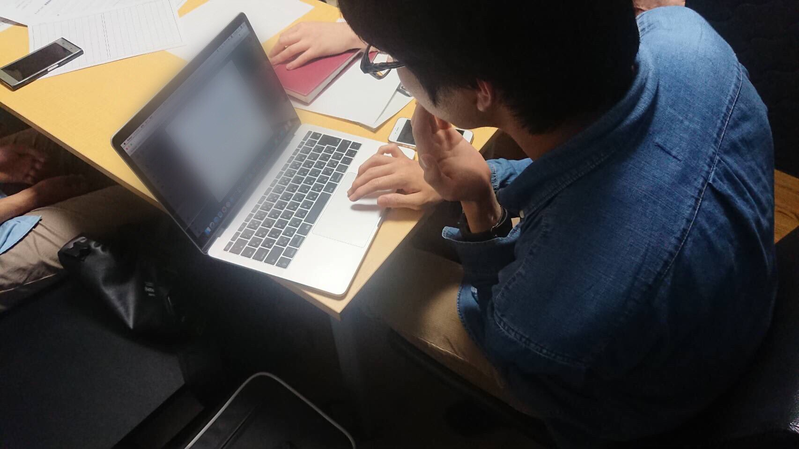

自己紹介
-根津泰之って？-

立命館大学3回生の根津泰之（ねづやすゆき）です。
普段はおとなしい性格ですが、時に行動力を発揮します。
webエンジニアのアルバイトをしています。
高校の時はプログラミングには全く関心はなく、大学で初めて触れました。
学業はもちろん、学内外での学生団体の活動など、多彩なことに取り組んでいます。
大切にしていることは、幸せに生きること。
そして、他人と自分の両方が幸せに感じるにはどうすればいいか日々考えています。
経歴
-history-
- 1999年12月3日
- 源氏物語ゆかりの地、宇治で生まれる。
- 小学校時代
- 運動会の色リーダーで、マイクで盛大に噛み、恥ずかしい思いをする
- 中学校時代
- 勉強に打ち込み、友達と教えあう
- 高校時代
- 入学時学年ワースト10だった友人が学年トップまで成績を上げ、焦りを感じる
- 大学受験前
- 受験系の動画を探している時に、はなおの動画と出会う
- 2018年4月
- 立命館大学 情報理工学部に入学
- 2018年6月
- TOEIC L&R(IP) 初受験で670点を取る。
- 2019年3月
- プログラミングに興味を持ち、プログラミングのバイトを探し出す
- 2019年8月
- 未来電子でインターンを始める（2020年1月まで）
- 2019年12月
- 生誕20周年
- 2020年2月
-
フェンリル株式会社
で短期のインターンを経験。
ぐるなびapiを用いた レストラン検索アプリを作成。 - 2020年2月
-
株式会社タマイインベストメントエデュケーションズ
でwebエンジニアのアルバイトを始める。
スキル
-skill-
- HTML...... イメージ画像からページを作ることができる
- CSS...... レスポンシブ対応ができるように学習中
- JavaScript...... jqueryやvue.jsの操作経験あり
- phpなどのサーバーサイド言語
- データベース操作
ある程度使えるもの
これから学習するもの
活動

NHK全国大学放送コンテスト実行委員会 元委員
毎年12月に行われる大学生の放送の大会を企画、運営する団体です。
35回大会、36回大会で実行委員をつとめました。
Foreign Student Supporters（情報理工学部留学生支援団体）
情報理工学部に来た留学生に観光地や日本文化を紹介する活動をしています。
立命館大学 入試広報学生スタッフ
オープンキャンパスの運営や受験相談をする団体です。
趣味
-hobby-

鉄道旅行
スーツさんの動画
を見て日本各地を旅したいと思うようになった。
鉄道で中国地方1周、東日本1周を成し遂げる。
なお、旅行大好きだが海外経験はない。
YouTube
暇つぶし系
大学受験ネタが好きで、(元)大学生のYouTuberの動画をよく観る。
ビジネス・勉強系
マコなり社長
考え方、生き方などを発信
もーりーチャンネル
節約術、旅のコツなどを紹介
英語車掌チャンネルSEKIDAI
英語の勉強法や鉄道の豆知識など